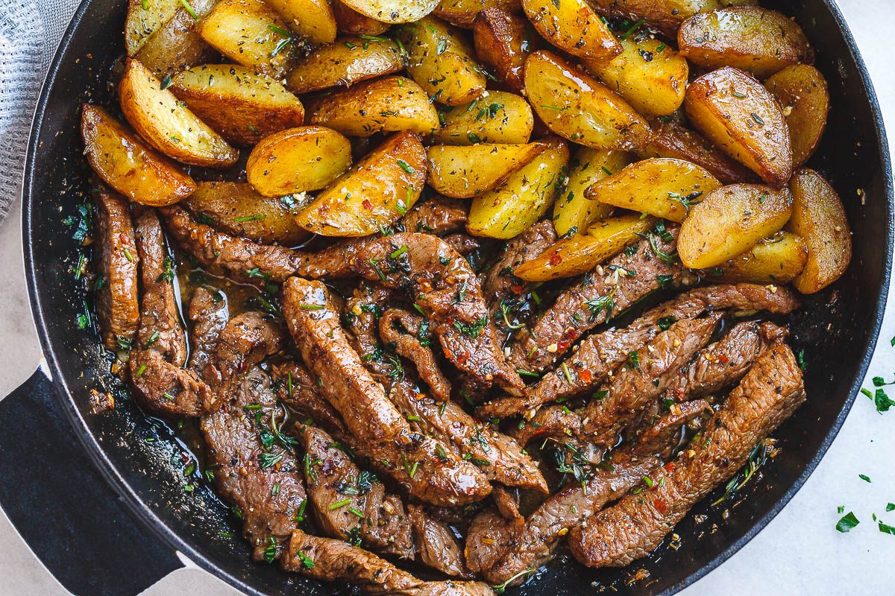

ingredientes:
700 g de filetes de res
700 g de papas bolitas cortadas en cuatro
1 cuchara de sopa de aceite de oliva
3 cucharadas de mantequilla
5 dientes de ajo picaditos
1 ramita de romero fresco
Salsa de pimienta
1/3 taza de salsa de soja
duración aprx: 30min cantidad: 1.5kg
Preparacion:
En un tazón grande, mezcle las tiras del filete con la salsa de soja, aceite de oliva, pimienta molida y salsa de pimienta. Reserve y deje marinar mientras cocina las papas.
En una sartén grande, en el fuego medio-alto, mezcle una cuchara de aceite de oliva y una cucharada de mantequilla
Cuando la mantequilla se derrita, agrega las papas. Cocina por unos 4 minutos, hasta que las papas doren y se queden suaves. Transfiera a un plato y reserve
Mantenga la misma sartén a fuego medio y agregue dos cucharadas de mantequilla, el ajo, pimienta y las hierbas frescas.
Ponga las tiras de carne en la sartén, manteniendo la escurrida para más tarde.
Cocina cada lado del filete por 1 minuto, hasta dorar bien.
Retire del fuego y sirva con la guarnición de su gusto.